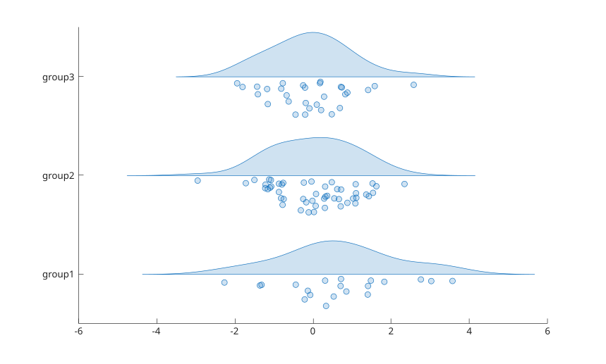

raincloudplot(ydata)
raincloudplot(xgroupdata, ydata)
raincloudplot(tbl, yvar)
raincloudplot(tbl, xvar, yvar)
raincloudplot(..., propertyName, propertyValue)
raincloudplot(ax, ...)
r = raincloudplot(...)
| Parameter | Description |
|---|---|
| ydata | sample data: numeric vector or matrix. A matrix creates one rain cloud plot per column. |
| xgroupdata | positional grouping data: numeric or categorical vector with the same number of elements as ydata, or a matrix with the same size as ydata. One rain cloud is drawn for each unique value. |
| tbl | table or timetable containing the data. |
| yvar | table variables containing the numeric sample data: names, numeric indices or logical selector. |
| xvar | table variables containing the numeric or categorical positional grouping data. |
| ax | target axes (default: current axes). |
| DensityWidth | positive scalar: maximum width of a rain cloud plot in units of the positional grouping data (default: 0.9). |
| Orientation | 'horizontal' (default) or 'vertical'. With 'horizontal', the sample values are along the x-axis and the groups along the y-axis. |
| Parameter | Description |
|---|---|
| r | raincloudplot graphics object, or column vector of objects: one per column of a matrix, or one per table variable in xvar or yvar (whichever has more elements). |
raincloudplot visualizes the empirical distribution of a data sample together with the samples themselves. One half of a rain cloud plot is a half violin plot (the cloud) showing a kernel density estimate of the sample; the other half is a swarm of markers (the rain), one marker per sample, offset away from the cloud baseline so that points do not overlap.
With the default horizontal orientation, the cloud is drawn above the group position and the rain below it. With the vertical orientation, the cloud is drawn on the right of the group position and the rain on the left.
The kernel density estimate is the one used by violinplot. The cloud widths of all groups of one object are scaled together so that the widest cloud reaches half of DensityWidth. The spread of the rain follows the local density.
Each object has its own color: FaceColor is taken from the axes ColorOrder using SeriesIndex, which follows the creation order in the axes. EdgeColor, MarkerFaceColor and MarkerEdgeColor follow FaceColor while their mode is 'auto'.
Categorical grouping data are placed at consecutive integer positions labeled with the category names. When several table variables are used as grouping data, categories with the same name share the same position.
The raincloudplot properties page lists the supported object properties.
ydata = randn(100, 1);
xgroupdata = categorical(repelem(["group1"; "group2"; "group3"], [20, 50, 30]));
raincloudplot(xgroupdata, ydata)
figure
hold on
r1 = raincloudplot(80 + 8 * randn(40, 1));
r2 = raincloudplot(75 + 6 * randn(60, 1));
r1.FaceColor = "g";
r2.FaceColor = "m";
legend("Smoker", "Nonsmoker")X1 = categorical(repelem(["group1"; "group2"], [90, 10]));
X3 = categorical(repelem(["group3"; "group4"], [25, 75]));
tbl = table(X1, X3, randn(100, 1), randn(100, 1) + 5, 'VariableNames', {'X1', 'X3', 'Y1', 'Y2'});
figure
raincloudplot(tbl, ["X1", "X3"], ["Y1", "Y2"])| Version | Description |
|---|---|
| 2.0.0 | initial version |